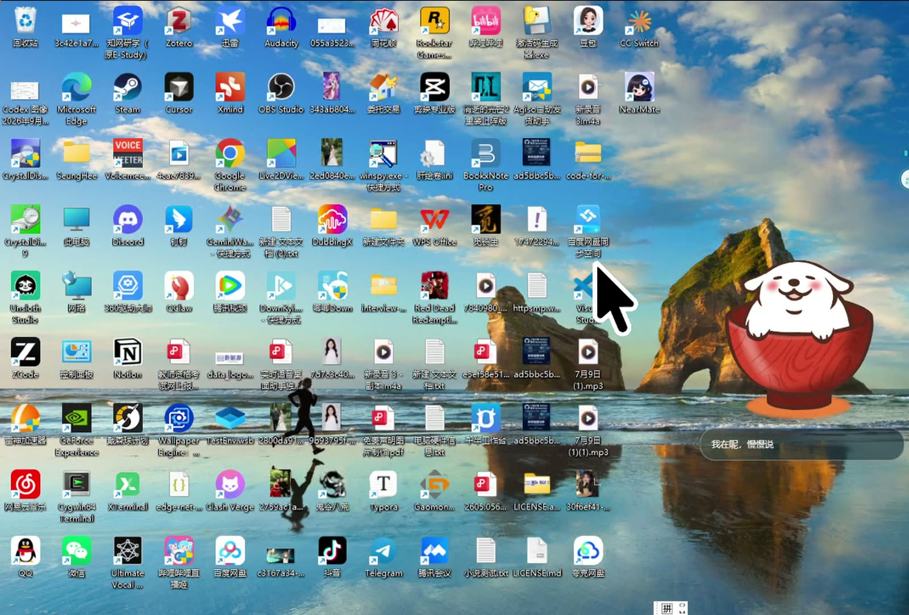
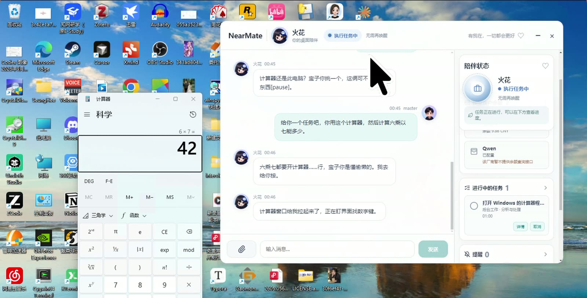
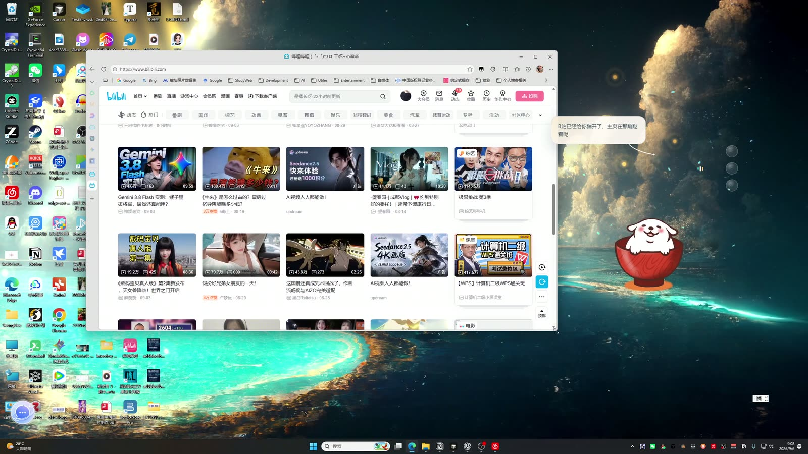
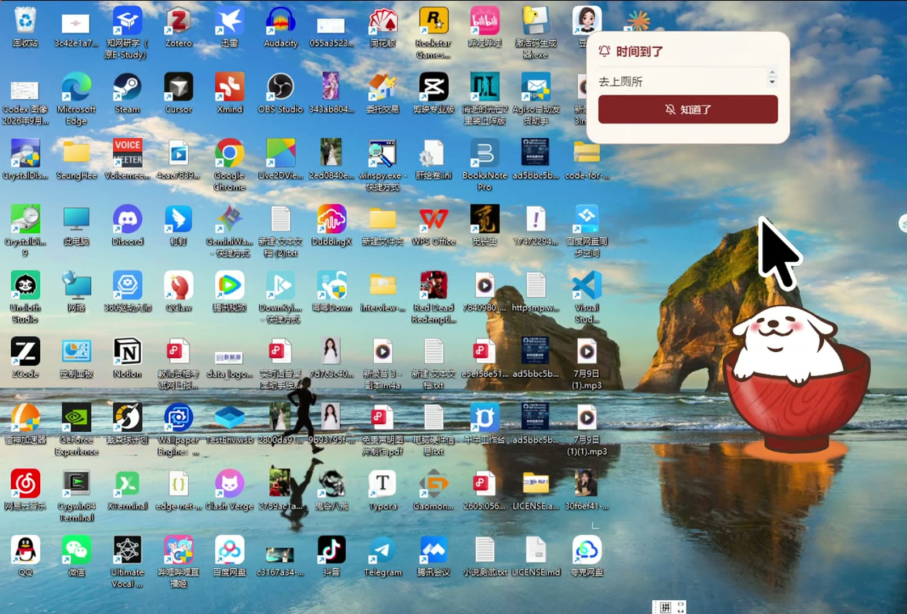
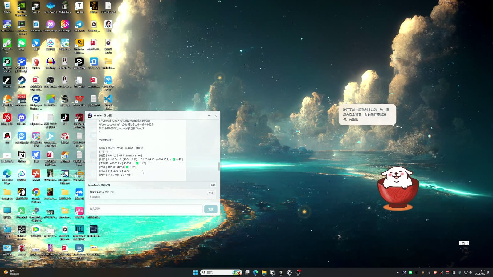
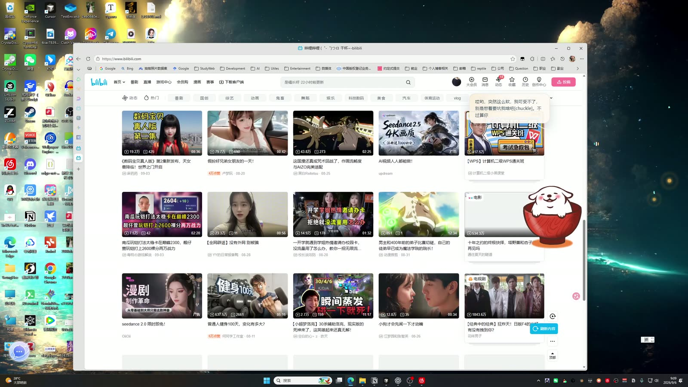
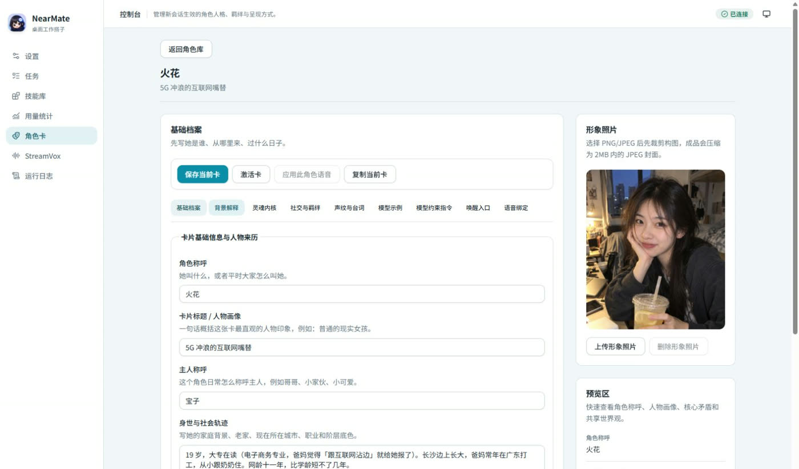
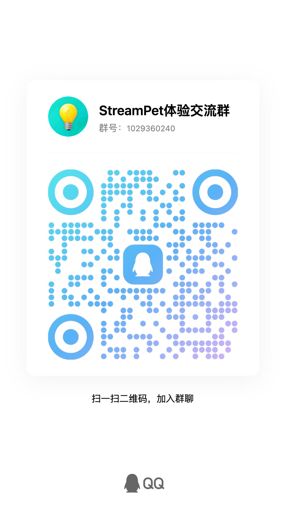

01
喊一声，她就在
叫名字就能唤醒，不用按快捷键。早上、晚上、深夜，她的回应各不相同。
我你好，火花同学。
火花我在呢，慢慢说。

实时语音 · Windows 桌面搭子
不用打字，不用切窗口。
叫一声名字，说你想做的事——打开应用、操作电脑、定个提醒，她都接得住，还会顺嘴损你两句。

用计算器算一下六乘七。
 火花
火花
六乘七都要开计算器？行，我去给你按。
WHAT SHE CAN DO
下面每一张图都来自真实录屏，每一句对话都是她当时的原话。
叫名字就能唤醒，不用按快捷键。早上、晚上、深夜，她的回应各不相同。
我你好，火花同学。
火花我在呢，慢慢说。

网易云、B 站、QQ……说出名字就行，本地软件和网页都能拉起来。
我帮我打开一下 B 站。
火花B 站已经给你踹开了，主页在那蹦跶着呢。

交代一个任务，她盯着界面一步步点。实机演示：打开计算器，自己按出 6 × 7。
火花计算器窗口给我拉起来了，正在盯界面找数字键。
火花算好了，六乘七等于四十二。
一句话定好提醒，到点弹窗加语音一起来。别指望她客气。
我三十秒以后我要去上个厕所，你提醒我一下。
火花宝子，到点了，去上厕所哦！别搁那憋着了啊！

格式转换、视频总结这类耗时任务交给后台智能体。动文件前先问你授权，结果放进卡片里。
火花好，本次授权已经生效。
火花转好了哈。完整的已经发到聊天窗口了，想细看就去结果卡里翻。

不是客服腔，会接梗也会回嘴。运行期间记得你们刚聊过什么。
我你是我最好的伙伴。
火花哎呦，突然这么软，我可受不了。别是憋着要坑我啥吧？不过算你识相。

CHARACTER CARD
「火花」只是默认角色。用角色卡写下她是谁、怎么说话、怎么称呼你，再绑定一副专属声音。

PRODUCT FILM
全部实机录屏与角色原声，请开声音观看。
GET STARTED
安装后跟着应用里的向导走即可。
NVIDIA 显卡选 CUDA，其他设备选 Universal。同一版本的所有分卷放进同一个文件夹，再运行安装程序。
NearMate 免费开源。按向导配置自己的模型 API；模型服务费用由对应厂商单独收取。
按向导检查电脑、下载语音模型并试听。设置好角色，喊她的名字就能开始。
免费开源：软件与内置语音无需购买，也没有使用期限。模型 API 需自行准备。查看完整使用手册 →
DOWNLOAD
选择适合这台电脑的安装包。
安装文件发布后，将在这里提供直接下载。
安装文件发布后，将在这里提供直接下载。
分卷安装，文件要放在一起。请逐个下载所选版本的全部文件（.exe 与 .bin），放在同一文件夹中，保留原文件名，然后运行 .exe。两个版本的分卷不能混用。
NearMate 是让角色贴近电脑任务的运行环境。你可以用角色卡设置当前角色的身份和语气，再选择虚拟形象与语音。宣传中的「火花」是默认角色，实际角色由你在应用里配置。
NearMate 自有代码采用 Apache-2.0，软件免费使用。DeepSeek、Qwen 及后台工作模型需要自备服务凭据，调用费用由对应厂商单独收取。语音模型和第三方素材分别适用原许可。
CUDA 版面向配备兼容 NVIDIA 显卡的电脑。Universal 版提供 DirectML、Vulkan 与 CPU 运行路径，适合查看其他设备的支持情况。两个版本的功能目标一致，但运行环境不同。安装后请通过向导检查设备与模型要求；实际速度取决于硬件和所选模型。
安装包采用分卷发布。请下载同一个版本下的安装程序和全部 .bin 文件，把它们放进同一文件夹，保留原文件名，再双击 .exe。缺少任意一个分卷都无法完成安装。SHA256 校验文件可用于核对下载内容是否完整。
NearMate 在本机运行桌面界面和部分语音能力，但模型推理及后台工作可能访问外部服务。对话和选用的屏幕、材料内容会按功能需要发送给已配置的服务。请结合对应厂商的数据政策，决定使用哪些材料与服务。
当前版本会在后台进程运行期间保留近期对话和任务上下文，用来衔接交流；退出后台进程后，这些运行期记忆不会继续保留。角色卡与设置单独保存。
需要。在控制台的“后台工作”设置中配置相应服务、凭据与主模型，再选择适合的权限。任务需要权限或补充资料时，会在界面中请求你的决定；执行情况和交付结果可在活动记录中查看。
COMMUNITY
分享角色搭配，聊聊用法，也把遇到的问题带给我们。
QQ 体验交流群1029360240
用手机 QQ 扫码，或搜索群号加入。二维码与群内仍显示历史名称「StreamPet 体验交流群」。
通过 GitHub 反馈问题 ↗